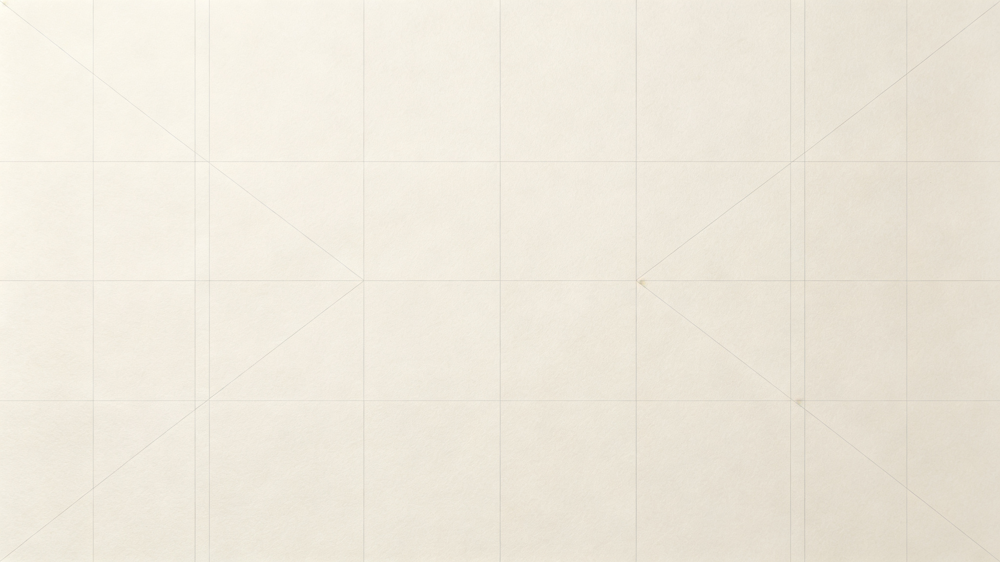
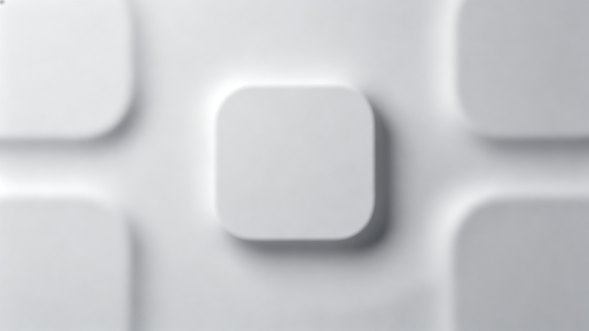
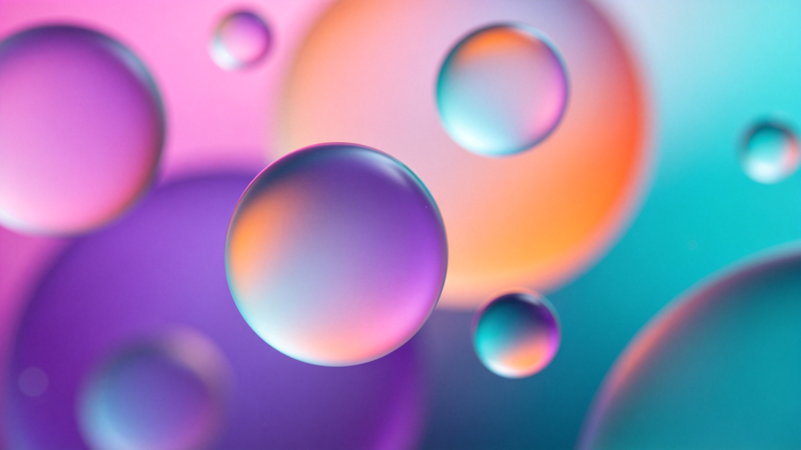
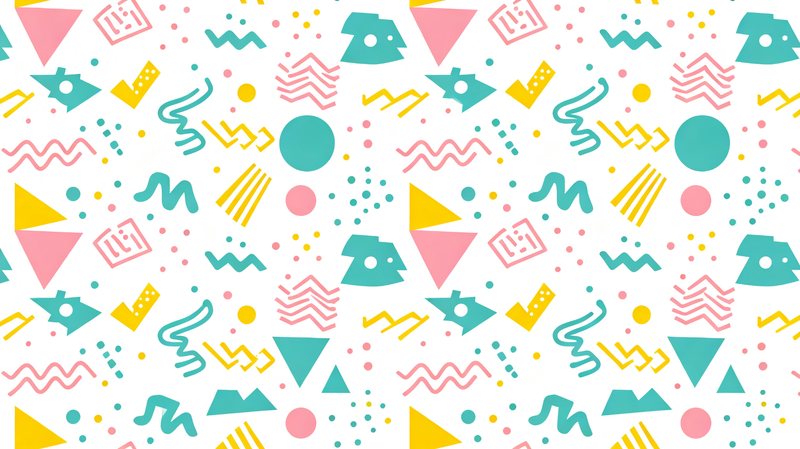
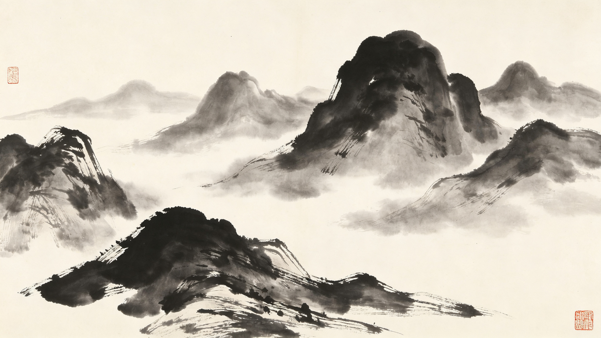
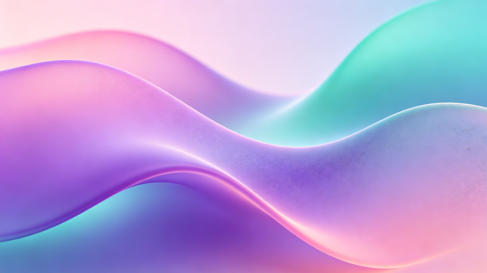
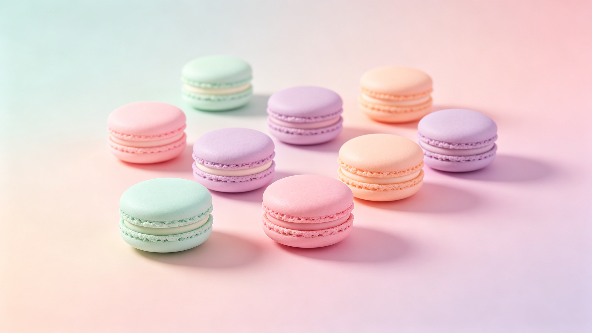
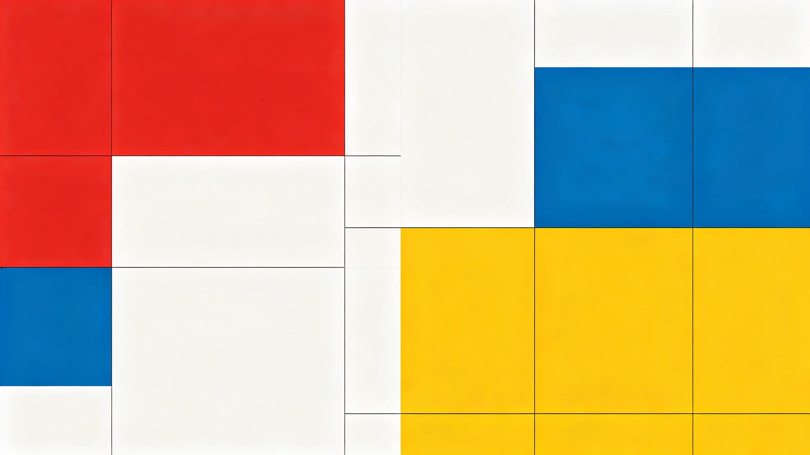
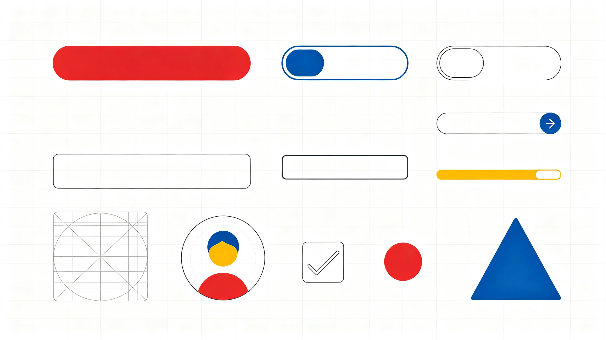

极简主义
01-minimalism
Do not replace product UI themes in kb-ui/chatez/codedrill etc.

新拟态
02-neumorphism
Do not replace product UI themes in kb-ui/chatez/codedrill etc.

玻璃拟态
03-glassmorphism
Do not replace product UI themes in kb-ui/chatez/codedrill etc.
04-cyberpunk
赛博朋克
04-cyberpunk
Do not replace product UI themes in kb-ui/chatez/codedrill etc.
05-vaporwave
蒸汽波
05-vaporwave
Do not replace product UI themes in kb-ui/chatez/codedrill etc.

孟菲斯
06-memphis
Do not replace product UI themes in kb-ui/chatez/codedrill etc.
07-popart
波普艺术
07-popart
Do not replace product UI themes in kb-ui/chatez/codedrill etc.

中国水墨
08-ink
Do not replace product UI themes in kb-ui/chatez/codedrill etc.
09-gold
鎏金东方
09-gold
Do not replace product UI themes in kb-ui/chatez/codedrill etc.
商务科技
10-corporate
Do not replace product UI themes in kb-ui/chatez/codedrill etc.
11-terminal
终端黑客
11-terminal
Do not replace product UI themes in kb-ui/chatez/codedrill etc.

流体渐变
12-fluid
Do not replace product UI themes in kb-ui/chatez/codedrill etc.

粉彩马卡龙
13-pastel
Do not replace product UI themes in kb-ui/chatez/codedrill etc.
14-watercolor
手绘水彩
14-watercolor
Do not replace product UI themes in kb-ui/chatez/codedrill etc.
3D 等距
15-isometric
Do not replace product UI themes in kb-ui/chatez/codedrill etc.
扁平插画
16-flat
Do not replace product UI themes in kb-ui/chatez/codedrill etc.
17-acid
酸性设计
17-acid
Do not replace product UI themes in kb-ui/chatez/codedrill etc.

瑞士国际
18-swiss
Do not replace product UI themes in kb-ui/chatez/codedrill etc.

复古怀旧
19-retro
Do not replace product UI themes in kb-ui/chatez/codedrill etc.
20-gothic
暗黑哥特
20-gothic
Do not replace product UI themes in kb-ui/chatez/codedrill etc.
21-natural
自然有机
21-natural
Do not replace product UI themes in kb-ui/chatez/codedrill etc.
22-artdeco
装饰艺术
22-artdeco
Do not replace product UI themes in kb-ui/chatez/codedrill etc.
23-pixel
像素艺术
23-pixel
Do not replace product UI themes in kb-ui/chatez/codedrill etc.
24-papercut
剪纸拼贴
24-papercut
Do not replace product UI themes in kb-ui/chatez/codedrill etc.